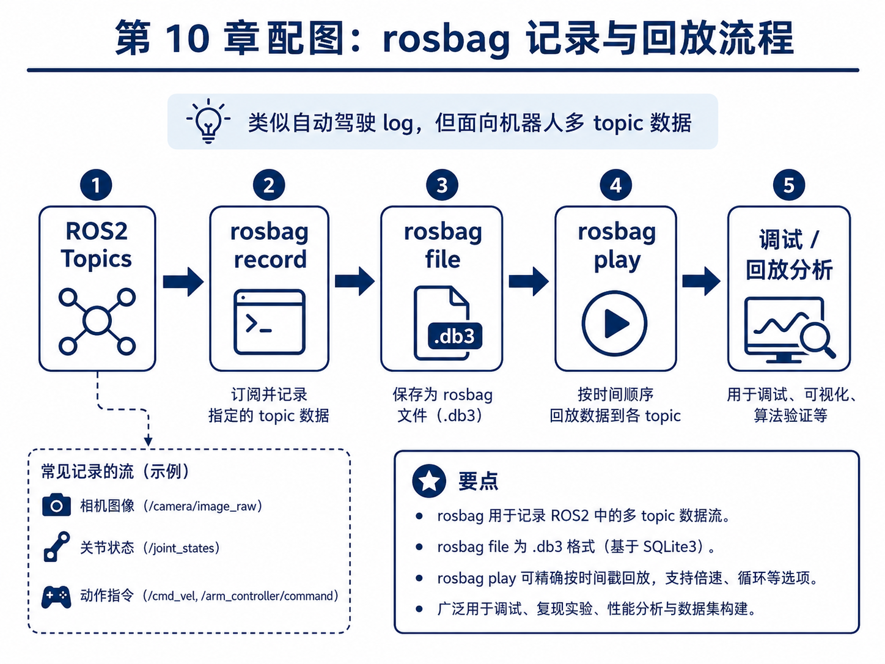
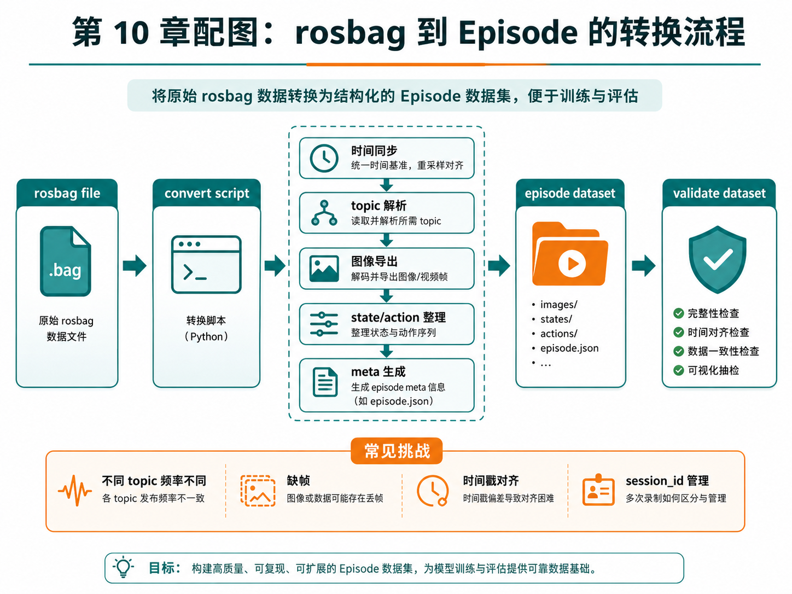

第 10 章：rosbag 与机器人数据记录
上一章我们已经建立了主线项目的最小 ROS2 通信骨架：相机、关节状态、动作命令、任务信息等都通过 topic 在系统里流动。接下来，问题就变得非常具体了：
这些在线流动的数据，如何被记录下来，并最终转成训练可用的 episode？
在自动驾驶里，我们常常会说 log；在 ROS2 世界里，一个非常核心的工具就是 rosbag。它可以理解为：把多个 topic 的时间序列数据完整记录下来，并支持后续回放、调试、转换与分析。也正因为如此，rosbag 是连接“在线机器人运行”与“离线数据集构建”的关键桥梁。
本章的目标，是让你建立这样一条完整理解链：
- ROS2 topics 在线发布；
- rosbag 记录这些 topic；
- 后续用转换脚本抽取并整理数据；
- 最终落成 episode 数据结构；
- 再接回前面第 8 章的数据质检链路。
这一步一旦想通，前 1–10 章的主线就会第一次形成一个较为完整的数据工程闭环。
1. 本章要解决的问题
本章重点解决以下问题：
- rosbag 是什么，为什么它重要？
rosbag record与rosbag play分别做什么？- rosbag 与自动驾驶 log 在思想上有什么相似之处？
- 多 topic 记录时为什么时间同步是关键？
- recorder 节点与 rosbag 的关系是什么？
- 如何从 rosbag 转换为 episode？
- 为什么图像、状态、动作和元信息需要分别整理？
- 不同频率 topic 的对齐难点在哪里？
- 在没有真实 ROS2 / rosbag 环境时，如何先做教学版转换脚本？
2. 为什么这个问题重要
2.1 没有记录，就没有可复现实验
如果你只是在线运行机器人，而没有把数据系统地记录下来，那么：
- 失败 case 无法复盘；
- 成功示范无法沉淀为训练数据；
- 调参与模型更新无法和历史数据对照；
- 数据质检与数据版本管理都无法成立。
也就是说，记录能力是学习系统“可积累”的前提。
2.2 rosbag 是离线分析的入口
很多看似“训练问题”的问题，其实是录制问题。例如：
- 某条 topic 没录到；
- 图像和状态时间对不上；
- 回放时发现某个关键阶段数据丢失；
- recorder 的时间基准和其他节点不一致。
rosbag 的价值就在于：它能让你重新回到当时的运行现场，进行回放、调试和转换。
2.3 为什么 rosbag 和自动驾驶 log 很像
如果你有自动驾驶背景，会很容易理解 rosbag 的位置：
- 都是多源时序数据记录；
- 都强调 timestamp；
- 都服务于回放、调试、评测与数据构建；
- 都是离线闭环和在线系统之间的桥梁。
差异只在于：机器人系统更贴近执行器控制和操作任务，因此动作流与操作上下文在 rosbag 转换中更重要。
3. 核心概念
3.1 rosbag record：记录 topic 数据流
rosbag record 的作用是订阅指定 topic，并把它们记录到 bag 文件中。对主线项目来说，最有价值的 topic 至少包括：
/camera/front/image_raw/camera/wrist/image_raw/joint_states/action_cmd/task_info
这些 topic 被记录后，就形成了后续可分析、可回放、可转换的原始材料。
3.2 rosbag play：回放历史数据
rosbag play 可以按照时间顺序把 bag 中的数据重新发布到各个 topic。它的意义在于：
- 方便调试算法；
- 方便验证 recorder / converter 的逻辑；
- 方便复现现场；
- 方便做可视化与错误分析。
也就是说，record 更像是“冻结现场”，而 play 更像是“重放现场”。
3.3 rosbag 到 episode 的转换
原始 rosbag 不是最终训练数据。因为 bag 文件更像系统级日志，而训练阶段通常更需要结构化 episode。转换过程至少包括：
- 读取 bag 中相关 topic；
- 按时间同步 / 对齐；
- 导出图像帧；
- 整理状态与动作序列；
- 生成
meta.json； - 输出 episode 目录结构。
3.4 多 topic 对齐为什么难
在真实系统中，不同 topic 常常频率不一致：
- 图像 30Hz；
- joint state 50Hz；
- action command 10Hz；
- task_info 只有任务切换时才发一次。
因此，rosbag 转 episode 的关键挑战之一，就是如何定义统一时间基准，并决定：
- 以哪个流为主时间轴；
- 哪些流做最近邻采样；
- 哪些流只在元信息中保留；
- 缺帧时如何处理。
3.5 为什么要引入 session_id
一旦系统开始反复录制，数据管理会迅速变复杂。比如：
- 今天上午录了 10 次；
- 下午又录了 12 次；
- 其中一半是调试，一半是正式采集。
如果没有 session_id 或类似标识，后续数据追溯会很混乱。因此，本章会在讨论中强调 session 级管理的重要性。
4. 概念图 / 流程图 / 架构图
4.1 图 10-1 rosbag 记录与回放流程

这张图展示了 rosbag 的两个核心动作：
record：订阅并记录多 topic；play：按时间顺序回放到各 topic。
它强调了 rosbag 和自动驾驶 log 的类比关系：它们都不是最终训练数据本身，而是用于回放和构建数据集的原始记录材料。
4.2 图 10-2 rosbag 到 episode 的转换流程

这张图把转换过程拆得非常清楚：
- 时间同步；
- topic 解析；
- 图像导出；
- state / action 整理；
- meta 生成；
- 最后输出 episode dataset，并接上 validate dataset。
4.3 Mermaid 图：record → play → convert
flowchart TD
A[ROS2 topics] --> B[rosbag record]
B --> C[bag file]
C --> D[rosbag play]
C --> E[convert script]
E --> F[episode dataset]
F --> G[validate dataset]
4.4 Mermaid 图：转换脚本内部流程
flowchart TD
A[读取 bag] --> B[按 topic 分组]
B --> C[时间同步]
C --> D[导出图像]
C --> E[整理 states]
C --> F[整理 actions]
D --> G[生成 episode 目录]
E --> G
F --> G
G --> H[写入 meta.json]
5. 工程化理解
5.1 recorder 与 rosbag 的关系
有些初学者会把 recorder 与 rosbag 混为一谈。更准确地说：
- rosbag 是系统级的多 topic 录制工具；
- recorder node 更像系统里的一个业务节点，它可以辅助记录、筛选、标注或触发 episode 切分。
在很多项目中，这两者会协同工作：用 rosbag 保存原始现场，用 recorder 提供结构化上下文。
5.2 教学阶段为什么先用 mock rosbag
本章主线项目新增了一个教学版的“mock rosbag”输入文件：
data/mock_rosbag/session_0001_mock_rosbag.jsonl
它并不是真实 .db3 文件，而是用 JSONL 模拟 rosbag 中按 topic 写入的消息流。这样做的好处是：
- 便于读者直接看懂输入；
- 便于用纯 Python 实现 converter；
- 先理解转换流程，再迁移到真实 rosbag 环境。
5.3 为什么转换脚本值得单独写
很多项目会直接在 recorder 里“边录边转”。这种做法不是不行，但在教学和工程上都不够清晰。把转换脚本单独拿出来有几个好处：
- 逻辑可复用；
- 便于离线调试；
- 便于对不同 session 重复转换；
- 便于版本管理和数据修复。
6. 主线项目中的位置
本章为主线项目新增：
robot-learning-shelf-demo/
data/mock_rosbag/
session_0001_mock_rosbag.jsonl
scripts/
03_convert_rosbag_to_dataset.py
datasets/
dataset_from_mock_rosbag/
episode_9001/
reports/
ch10_rosbag_conversion_summary.md
ch10_dataset_from_mock_rosbag_report.json
ch10_dataset_from_mock_rosbag_report.md
ch10_dataset_from_mock_rosbag_action_distribution.png
这意味着主线项目现在第一次具备：
- 从“模拟 bag”到 episode 的完整转换能力；
- 一条新的 episode 数据来源通路；
- 以及与第 8 章数据验证脚本的衔接能力。
7. 示例
7.1 示例 1：记录哪些 topic
主线项目中最值得优先记录的 topic 是：
- 前视图像；
- 腕视图像；
- joint states；
- action command；
- task info。
这些 topic 基本覆盖了 episode 构建所需的 observation、state、action 和 meta。
7.2 示例 2：不同频率流如何处理
如果 /joint_states 更新频率高于 /action_cmd，一种常见做法是：
- 以图像或主控制周期为主时间轴；
- 对低频或高频 topic 做最近邻对齐；
- 将原始 timestamp 仍然保留下来，便于复查。
7.3 示例 3：从 mock rosbag 转换到 episode
本章新增的转换脚本会读取 session_0001_mock_rosbag.jsonl，并输出：
datasets/dataset_from_mock_rosbag/episode_9001/
images/front/
images/wrist/
states.jsonl
actions.jsonl
meta.json
这让你第一次完整走通：topic → bag → episode 的链路。
7.4 示例 4：转换后接入验证
转换只是第一步。更完整的工程闭环是：
rosbag / mock bag
-> convert
-> episode
-> validate_dataset
也就是说，任何新录制来源的数据，都应该在进入训练前先通过第 8 章的质检。
8. 练习代码
8.1 转换脚本
运行方式：
cd robot-learning-shelf-demo
python scripts/03_convert_rosbag_to_dataset.py --bag_jsonl data/mock_rosbag/session_0001_mock_rosbag.jsonl --output_episode_dir datasets/dataset_from_mock_rosbag/episode_9001 --summary_md reports/ch10_rosbag_conversion_summary.md
8.2 转换后验证
python scripts/04_validate_dataset.py --dataset_dir datasets/dataset_from_mock_rosbag --output_json reports/ch10_dataset_from_mock_rosbag_report.json --output_md reports/ch10_dataset_from_mock_rosbag_report.md --plot_path reports/ch10_dataset_from_mock_rosbag_action_distribution.png
这样，你就能验证转换出来的新数据是否合格。
9. 代码解释
9.1 03_convert_rosbag_to_dataset.py 的核心思路
这个脚本的输入是按 topic 写入的 JSONL，输出是标准 episode 目录。它主要做了四件事：
- 按 topic 分组；
- 以主时间轴重采样对齐；
- 分别生成 states / actions / meta；
- 导出图像占位帧。
其中“导出图像占位帧”并不是为了模拟真实视觉复杂度，而是为了让 episode 结构保持完整。
9.2 为什么先生成 placeholder 图像
在真实系统中，图像当然来自真实相机数据；但在教学阶段，如果为了等真实图像链路而停住，会大大拖慢学习节奏。因此，这里先生成 placeholder 图像，目的是让你优先理解：
- episode 的目录结构；
- 图像帧与时间步对应；
- conversion script 应该产出什么。
9.3 为什么 summary 报告仍然重要
转换脚本不仅要“生成文件”，还要输出一份 summary，说明：
- 转换了多少步；
- 包含哪些 topic；
- 导出了多少 front / wrist 帧；
- 输出目录在哪里。
这能帮助你快速判断转换有没有按预期完成。
10. 常见错误
错误 1：把 bag 当训练数据直接用
bag 更像原始记录，不是最终训练样本。
错误 2：忽略多 topic 频率差异
不做时间对齐就直接拼接，很容易得到错位数据。
错误 3：图像导出后不校验数量
导出图像数量与 state 数不一致，是非常常见的问题。
错误 4：转换后不接质检
没有经过验证的新数据，不应直接进入训练环节。
错误 5：没有 session 级命名规范
录制次数多起来后，没有 session_id 会让数据管理迅速失控。
11. 本章练习
- 设计 rosbag 录制命名规范，包含日期、任务名、operator_id、session_id；
- 扩展
03_convert_rosbag_to_dataset.py，让它支持读取不同 topic 频率； - 在
meta.json中增加session_id字段； - 思考：如果 wrist 图像频率只有 front 图像的一半，应如何对齐？
- 思考：自动驾驶 log 回放和机器人 rosbag 回放有什么相同与不同？
12. 本章产出
本章应当产出：
- 一份教学版 mock rosbag 数据；
- 一条从 mock rosbag 到 episode 的转换脚本；
- 转换后的 episode 数据目录；
- 一份转换 summary；
- 与第 8 章质检链路相衔接的完整流程。
13. 小结
这一章最重要的结论可以概括成一句话：
rosbag 的真正价值，不只是“把数据录下来”，而是把在线运行现场变成一个可回放、可分析、可转换、可沉淀的学习资产。
从主线项目角度看，到这一章结束时，我们已经把前面所有内容串成了一个较为完整的工程闭环：
- 明确任务；
- 定义 episode；
- 检查数据；
- 设计 ROS2 topic；
- 记录 / 转换数据；
- 再回到验证与训练。
这意味着第 1–10 章已经不仅是概念介绍，而是在逐步搭起一个真正能继续长成完整具身智能项目的系统骨架。